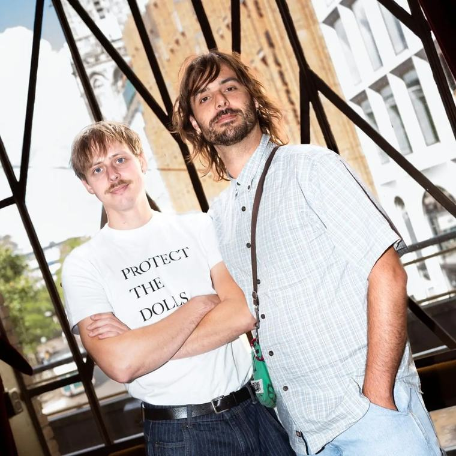

Обо мне

В театре темы часто решаются психологически или поэтически, но редко структурно и идеологически. Мои персонажи — не люди в психологическом смысле слова; они носители идей, воплощённые идеологии. Персонаж никогда не бывает просто индивидом — его конструирует среда, в которой он существует.
Во времена, когда разрыв между бедными и богатыми растёт, а доверие к институтам испаряется, логично, что именно те, кому досталось меньше всех, задают фундаментальные вопросы о природе системы. За неимением цельной идеологии, которая сделала бы возможным реальное сопротивление, люди ищут убежища в историях, растущих из реальной почвы — классового неравенства и бессилия, — но доведённых до такой крайности, что они теряют связь с реальностью.
Наше воображение застряло в романтическом порядке. Романтизм делает наши желания товаром — свобода есть покупка Range Rover, настоящая любовь находится с правильными духами, — а то, чего мы действительно хотим, остаётся недостижимым; и мы продолжаем потреблять, а мир вокруг не меняется и счастливее нас не делает.
Прежде всего меня вдохновляет репертуар западного канона. Главное — вскрыть и процедить идеологию, спрятанную за оригинальной пьесой, и посмотреть, сколько её ещё осталось в нашей. Лучшая услуга старому автору — дерзко перетащить его текст в настоящее.
Юмор для меня — лучшая смазка, чтобы исследовать «серьёзные» вопросы. Смех работает как лом: зрители хохочут, их защита падает, и именно в этот момент их можно заставить думать. Лишь потом, по дороге домой или в разговоре, приходит понимание: постойте, это было о чём-то.
Там, где реальности не хватает и нет коллективного рассказа, чтобы осмыслить эту боль, за дело берётся инстинкт выживания — фантазия.
Кун ван Сёрен (Алмере, 1994) · режиссёр и драматург · режиссёрский факультет Театральной академии Маастрихта (2020) · художественный руководитель Antiklimax вместе с Давидом Вестерой, базой служит Grand Theatre Groningen · автор в Het Zuidelijk Toneel.
С 2020 года Кун живёт и работает в Роттердаме. Он был ассистентом режиссёра Сары Мурманс в Het Zuidelijk Toneel и Theater Oostpool, в том числе в спектакле We Are The World, We Are The Brabant, и не раз ставил проходящий раз в два года Bosch Parade в Хертогенбосе.